|
Roda JC - FC Twente (2-0) 22 februari 2003 |
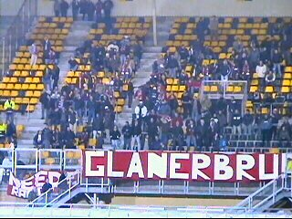
Slechts 150 Tukkers....
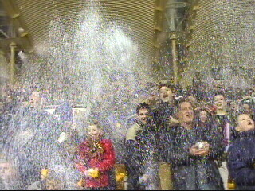
Confetti-actie op zuid.
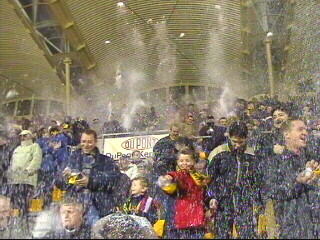
Let it snow, let it snow......
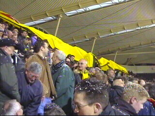
Het shirt zeilt deze keer over Z18.
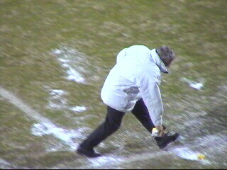
Robocop Rein in actie!
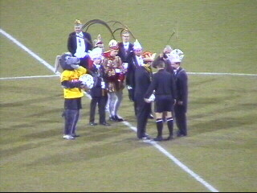
Cultuur-moment. Alaaf!!!
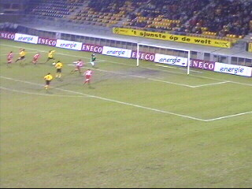
Roda begint sterk, maar valt na 20 min. terug.
Toch scoort Sonko in de 39e min. 1-0.
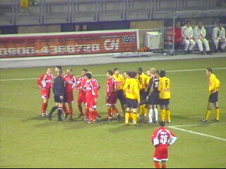
Polak krijgt rood voor trappen.
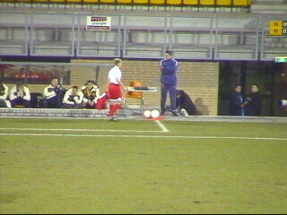
Negen minuten later kan Heubach inrukken
vanwege zijn tweede gele kaart.
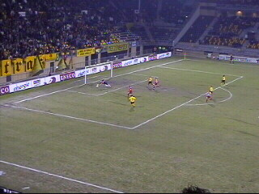
In de 90e min. scoort Soetaers de bevrijdende
2-0. Tot dan toe wist Roda zich geen raad met de
overtalsituatie 9-11!!!!
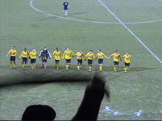
Thanx!
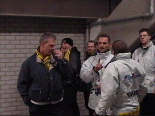
Al heet je BAM, al heet je IZZ.......
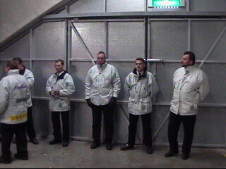
Die poort blijft dicht :-)
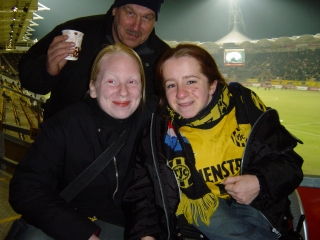
In de pauze bezochten we de noordwesthoek.
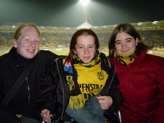
Janine and friends.
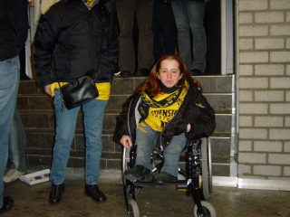
Roda wake up! The Kick Off is onbereikbaar
voor de minder valide medemens.
Een plaat, kleine moeite, moet toch kunnen!!!
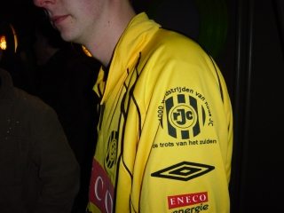
Wist u dat dit een heel bijzonder shirt is?
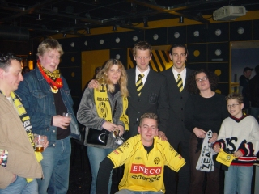
Bas Roorda en Ivan Vicelich waren deze keer de
pineut om ons te bezoeken.
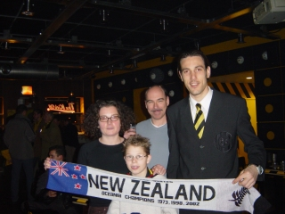
V.l.n.r. Danniëlle, Bas, Koempel, Ivan.
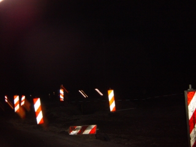
It's a long way home.......